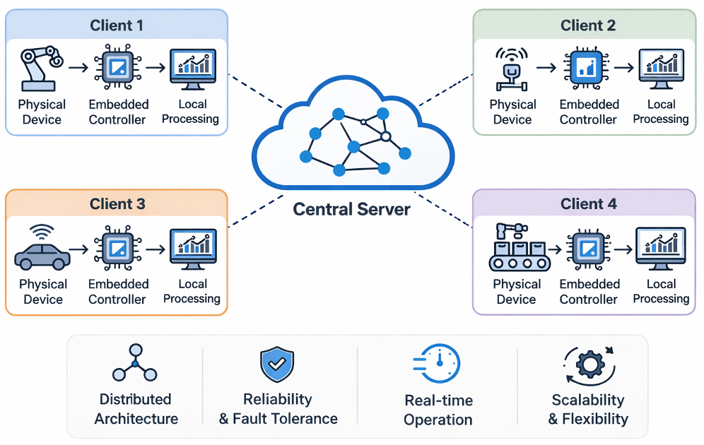
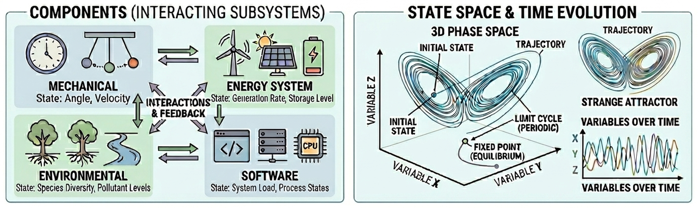
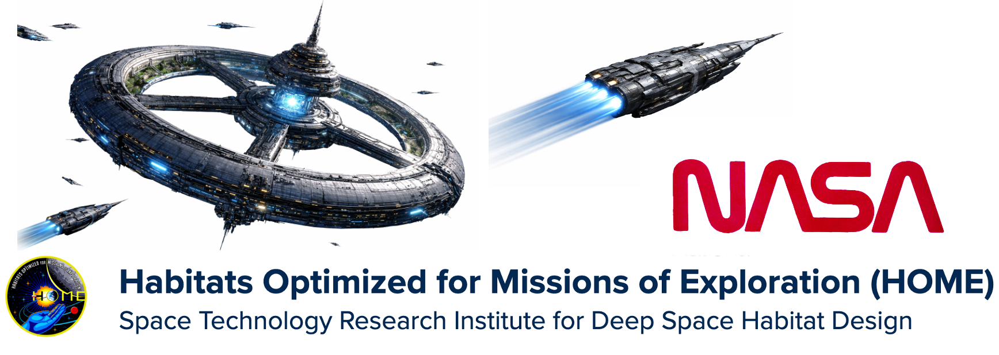

I. Federated Learning and Causal Reasoning

Why? : Industrial cyber-physical systems are becoming increasingly distributed across plants, subsystems, institutions, and sensing environments. In these settings, data cannot always be pooled because of privacy constraints, communication costs, ownership restrictions, or operational requirements. At the same time, system-level behavior is shaped by interdependencies across clients, so purely local models are often insufficient for understanding how faults propagate, how interventions should be designed, or how decision-making should incorporate cross-system effects.
What? : My work in this area develops federated learning methods that move beyond prediction alone toward causal reasoning in interconnected dynamical systems. I study problems such as federated Granger-causal structure learning, uncertainty in causal discovery, decentralized counterfactual reasoning, and root cause analysis when clients are heterogeneous and interact through latent or observed dependencies.
II. Predictive Modeling in Dynamical Systems

Why? : Many engineered systems evolve over time through degradations that can interact among multiple subsystems. These systems rarely fail through a single isolated mechanism; instead, performance changes (degradation) emerge gradually, often with partial observability, multiple failure modes, and feedback between components. This makes prediction fundamentally difficult, especially when the objective is not only to forecast outcomes but also to support maintenance, scheduling, and operational decision-making.
What? : In this line of work, I build predictive models for dynamical systems with an emphasis on diagnostics, prognostics, and health monitoring. My research addresses multi-component degradation, latent failure structure, task-dependent wear, and system-level prediction in applications such as robotic manipulators, aerospace systems, hydropower components, and other cyber-physical environments where temporal structure and physical context both matter.
III. Research Prototyping

My Ph.D. research has been closely associated with NASA’s Habitats Optimized for Missions of Exploration (HOME) Space Technology Research Institute (STRI), a multi-university initiative focused on autonomous and resilient habitat systems for deep-space missions. Within this collaboration, I have developed decentralized learning and inference frameworks for monitoring, diagnostics, and decision-making in interconnected cyber-physical systems.
As part of this effort, I led the design and implementation of system-level prototypes that integrate federated learning, causal reasoning, and predictive analytics across distributed subsystems. These systems were deployed and demonstrated in live experimental testbeds in collaboration with NASA engineers and aerospace industry stakeholders.
- Decentralized Root Cause Analysis (2024): Developed and demonstrated a system for identifying failure origins in interconnected subsystems using federated causal inference, presented to NASA engineers and aerospace collaborators. Demonstrated on the HOME spacecraft mockup and STEVE testbed, showcasing real-time tracing of cascading faults and autonomous root subsystem identification.
- Decentralized Orchestration of Predictive Analytics (2023): Designed a distributed framework for coordinating predictive models across multiple subsystems, enabling real-time monitoring and decision support in a smart habitat environment. Deployed Docker-based analytics pipelines using Gustavo, with edge devices generating subsystem-level insights and communicating with a central vehicle system manager for real-time optimization.